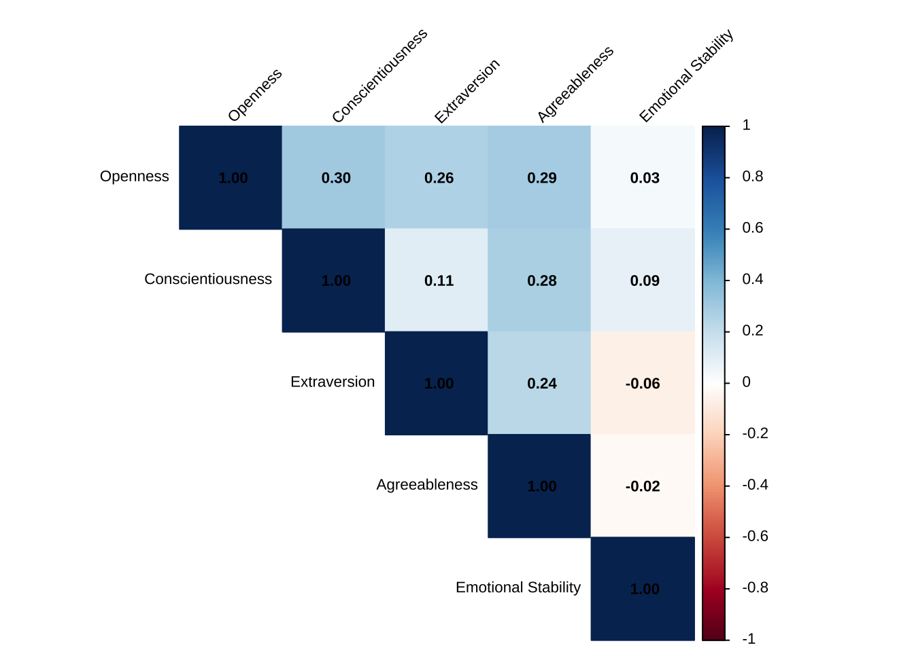
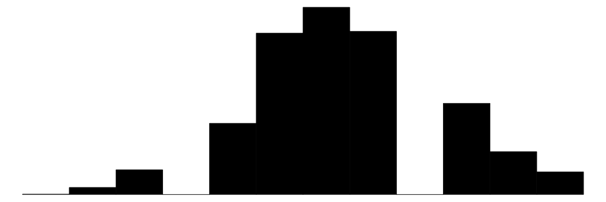

3 Данные
Цель данной главы — представить и охарактеризовать эмпирическую базу, на которой строится диссертационное исследование, а также обозначить основные этапы предварительного анализа, предшествующего построению моделей в последующих главах. Особое внимание уделяется тому, как в используемых данных представлены некогнитивные навыки, и в какой степени применяемые измерения позволяют валидно и надёжно зафиксировать межличностные различия по ключевым характеристикам личности.
Данные о некогнитивных навыках были впервые собраны в рамках РМЭЗ в 25-й волне (2016 год), а затем повторно в 28-й волне (2019 год). Эти данные охватывают респондентов в возрасте от 10 лет и старше, что позволяет анализировать как молодежные, так и взрослые когорты. Несмотря на сбор данных в указанные годы, их открытая публикация состоялась с существенным временным лагом — только несколько лет спустя, что обусловило отложенный, но значительный исследовательский интерес к изучению некогнитивных навыков в российском контексте.
Одной из ключевых задач является анализ того, каким образом РМЭЗ операционализирует понятие некогнитивных навыков, а также сопоставление применяемого подхода с практиками измерения, реализованными в других панельных и кросс-секционных обследованиях. Особое внимание уделяется оценке валидности использованного инструментария и его применимости к российским данным.
Далее необходимо установить, представляют ли собой некогнитивные навыки независимые и слабо коррелирующие характеристики личности — то есть фиксируют ли они действительно автономные конструктные измерения, или же наблюдается значительная взаимосвязь между ними. Важным аспектом также является определение параметров изучаемой выборки, в том числе социально-демографических особенностей молодежи, включённой в анализ.
Завершающим этапом данной главы выступает проведение эксплоративного анализа распределения и выраженности некогнитивных навыков в различных подгруппах молодежи, что создаёт необходимую основу для перехода к регрессионному анализу в последующих главах.
3.1 Как РМЭЗ операционализирует некогнитивные навыки?
Развитие междисциплинарных подходов в социальных науках, а также интерес экономистов и социологов к психологическим конструктам поставили в центр внимания вопрос о том, каким образом личностные черты соотносятся с паттернами неравенства, результатами в системе образования, на рынке труда, а также с широким спектром социально-экономического поведения. Однако одним из главных препятствий для включения измерений личностных конструктов в национально репрезентативные обследования населения оставались высокая стоимость и методологическая сложность их надёжного измерения. Классический тест на личностные черты Большой пятерки, до сих пор применяющийся в психологических исследованиях, состоит из 240 вопросов, и его заполнение занимает до 40 минут (Costa & McCrae, 1992a, 1992b). Данное ограничение стимулировало исследователей к разработке упрощённых, но валидных инструментов, позволяющих фиксировать личностные черты в рамках крупных опросных программ.
Со временем была разработана сокращённая 44-вопросная шкала «Большой пятёрки» (John & Srivastava, 1999), ставшая важным шагом вперёд, поскольку она подтвердила возможность психометрически надёжного и валидного измерения пяти факторов личности с использованием более короткого и операционально удобного инструментария. Данный вопросник был положен в основу разработанного для German Socio-Economic Panel (SOEP), немецкой социально-экономической панели, теста из 15 вопросов (Gerlitz & Schupp, 2005). Вопросник прошел психометрическую оценку и подтвердил свою валидность во всех формах опросных обследований, за исключением телефонного (Lang и др., 2011). Последующие исследования подтвердили, что опросник демонстрирует приемлемые значения валидности и надежности, и в исследовательских контекстах, в которых существует выраженная потребность в краткости, шкала демонстрирует достаточный уровень полезности (Hahn и др., 2012). После успешного использования в немецкой SOEP, аналогичный набор вопросов для измерения личностных черт «Большой пятёрки» был включён в другие крупные панельные исследования, такие как Household, Income, and Labour Dynamics (HILDA) в Австралии (Lucas & Donnellan, 2009) и British Household Panel Survey (BHPS) в Великобритании (Taylor и др., 2009).
Позднее данная шкала была дополнена измерениями других личностных черт, включая настойчивость [grit], предвзятость в интерпретации враждебности [hostile attribution bias] и особенности принятия решений. Эти компоненты были включены в модуль некогнитивных навыков в рамках программы Skills toward Employment and Productivity (STEP), реализованной Всемирным банком в три волны в период с 2011 по 2017 год. Программа STEP была направлена на измерение ключевых навыков экономически активного населения и отслеживание их динамики по возрастным когортам в развивающихся странах. На момент реализации STEP оставалась единственной международной инициативой, включавшей системное измерение некогнитивных способностей, таким образом отдавая дань трудам Джеймса Хекмана и его коллег, доказавших значимость этих навыков для разнообразных социально-экономических результатов (Valerio и др., 2014).
Именно эта версия блока вопросов была интегрирована в обследование РМЭЗ в 2016 году и повторно применена в 2019 году. Однако сами данные стали доступны для широкой исследовательской аудитории лишь спустя несколько лет, что обусловило заметный рост интереса к изучению некогнитивных характеристик экономически активного населения России в академической литературе. На Рисунок 3.1 представлены ответы на единичные вопросы теста на некогнитивные навыки «Большой пятёрки», включенные в РМЭЗ в 25й и 28й волнах среди молодежи 15-29 лет.
3.2 Валидность и надежность инструментария
Внутренняя согласованность [internal consistency] и психометрические характеристики пяти конструктов некогнитивных навыков (открытость, добросовестность, экстраверсия, доброжелательность и эмоциональная стабильность) оценивались с использованием общей \(\alpha\) Кронбаха, средних корреляций между вопросами [inter-item correlations], сложности вопроса [item difficulty], дискриминации вопроса [item discrimination] и статистики \(\alpha\) Кронбаха если вопрос удален. Каждый конструкт измерялся с использованием трех вопросов с ответами, записанными по четырехбалльной шкале Лайкерта. Хотя короткие шкалы снижают нагрузку на респондентов в крупных опросах, они по своей сути ограничивают показатели надежности из-за уменьшенной вариативности ответов.
Во всех пяти шкалах средняя между-вопросная корреляция варьировалась от 0.222 (экстраверсия) до 0.367 (эмоциональная стабильность), при этом все значения превышали общепринятую нижнюю границу 0.15 для коротких психологических шкал (Clark & Watson, 1995). Это предполагает достаточную внутреннюю согласованность в пределах каждого конструкта. В частности, шкала открытости продемонстрировала прочную между-вопросную корреляцию 0,271 и \(\alpha\) Кронбаха 0.521, что указывает на умеренную внутреннюю согласованность. Учитывая, что общий \(\alpha\) Кронбаха чувствителен к количеству вопросов в шкале, значения в диапазоне 0,45–0,65 приемлемы для шкал из трех вопросов, особенно при использовании для оценки на уровне населения [population-level estimation].
Добросовестность (\(\alpha\) = 0,451), экстраверсия (\(\alpha\) = 0,467) и доброжелательность (\(\alpha\) = 0,478) также показали разумную внутреннюю согласованность, подкрепленную между-вопросными корреляциями на уровне около 0,22–0,23. Эмоциональная стабильность дала самую высокую внутреннюю согласованность (\(\alpha\) = 0,633) и самую сильную корреляцию между вопросами (0,367), что предполагает высокую внутреннюю однородность и надежность для этого конструкта.
| Row | Missings | Mean | SD | Skew | Item Difficulty | Item Discrimination | α if deleted | |
| Вам приходят в голову идеи, до которых другие не додумались раньше? | 0.69 % | 2.25 | 0.87 | 0.43 | 0.56 | 0.25 | 0.57 | |
| Вам очень интересно узнавать что-то новое? | 0.52 % | 3.1 | 0.79 | -0.45 | 0.77 | 0.44 | 0.24 | |
| Вы получаете удовольствие от красивого, например, природы, искусства и музыки? | 0.25 % | 3.33 | 0.77 | -0.84 | 0.83 | 0.33 | 0.43 | |
| Mean inter-item-correlation=0.271 · Cronbach's α=0.521 | ||||||||
| Row | Missings | Mean | SD | Skew | Item Difficulty | Item Discrimination | α if deleted | |
| Выполняя какое-то задание, Вы очень аккуратны? | 0.23 % | 3.21 | 0.68 | -0.47 | 0.80 | 0.36 | 0.21 | |
| Вам больше нравится расслабляться, чем усердно трудиться? | 0.54 % | 2.53 | 0.82 | -0.26 | 0.63 | 0.16 | 0.57 | |
| Вы работаете очень хорошо и быстро? | 0.67 % | 3.03 | 0.75 | -0.45 | 0.76 | 0.33 | 0.26 | |
| Mean inter-item-correlation=0.225 · Cronbach's α=0.451 | ||||||||
| Row | Missings | Mean | SD | Skew | Item Difficulty | Item Discrimination | α if deleted | |
| Вы разговорчивы? | 0.17 % | 2.89 | 0.86 | -0.24 | 0.72 | 0.43 | 0.10 | |
| Вы предпочитаете держать свое мнение при себе? | 0.44 % | 2.39 | 0.82 | 0.03 | 0.60 | 0.11 | 0.64 | |
| Вы открыты и общительны, например, Вы очень легко заводите друзей? | 0.27 % | 2.67 | 0.91 | -0.13 | 0.67 | 0.35 | 0.24 | |
| Mean inter-item-correlation=0.222 · Cronbach's α=0.467 | ||||||||
| Row | Missings | Mean | SD | Skew | Item Difficulty | Item Discrimination | α if deleted | |
| Вы легко прощаете других людей? | 0.56 % | 2.66 | 0.82 | -0.07 | 0.67 | 0.34 | 0.30 | |
| Вы очень вежливы с другими людьми? | 0.41 % | 3.26 | 0.66 | -0.46 | 0.81 | 0.25 | 0.45 | |
| Вы щедро делитесь с другими людьми своим временем и деньгами? | 0.34 % | 2.4 | 0.85 | 0.2 | 0.60 | 0.31 | 0.35 | |
| Mean inter-item-correlation=0.233 · Cronbach's α=0.478 | ||||||||
| Row | Missings | Mean | SD | Skew | Item Difficulty | Item Discrimination | α if deleted | |
| Вы спокойны в стрессовых ситуациях? | 0.41 % | 2.51 | 0.86 | -0.03 | 0.63 | 0.34 | 0.67 | |
| Вы склонны к беспокойству? | 0.80 % | 2.55 | 0.84 | -0.31 | 0.64 | 0.47 | 0.50 | |
| Вас легко заставить нервничать? | 0.47 % | 2.61 | 0.83 | -0.42 | 0.65 | 0.53 | 0.41 | |
| Mean inter-item-correlation=0.367 · Cronbach's α=0.633 | ||||||||
3.3 Независимость конструктов некогнитивных навыков
Вопрос независимости черт «Большой пятёрки» является принципиально важным не только с точки зрения статистической валидации инструментария, но и с позиции потенциального использования результатов в рамках программ и интервенций, реализуемых государственными или корпоративными акторами. Предпосылка о независимости некогнитивных навыков, определяемых в соответствии с таксономией «Большой пятёрки», указывает на то, что органы регулирования и заинтересованные стейкхолдеры имеют дело с относительно автономными личностными характеристиками. Это означает, что развитие одной из черт не обязательно приводит (а точнее — не приводит) к изменениям в других, что открывает возможности для целенаправленного воздействия.
В практическом измерении это позволяет субъектам образовательной политики и программ профессионального обучения разрабатывать специализированные интервенции, направленные на развитие конкретного навыка, без риска возникновения нежелательных побочных эффектов на другие характеристики. Кроме того, такая независимость облегчает оценку эффективности: положительные изменения в одной черте могут быть с большей достоверностью атрибутированы соответствующей программе.
Наконец, отдельные некогнитивные навыки могут играть различную роль в достижении успеха на рынке труда в зависимости от сектора экономики или социально-демографического профиля индивидов. Понимание независимого характера этих черт позволяет формулировать более точечные и чувствительные к контексту меры регулирования и поддержки, особенно в отношении молодежи из экономически уязвимых групп.
Матрица корреляции Рисунок 3.2 показывает, что пять некогнитивных конструктов (открытость, добросовестность, экстраверсия, доброжелательность и эмоциональная стабильность) демонстрируют низкие или умеренные интеркорреляции с коэффициентами в диапазоне приблизительно от −0,06 до 0,30. Самая высокая корреляция наблюдается между добросовестностью и открытостью новому опыту (r = 0.3). Низкие значения корреляции предполагают, что конструкты относительно независимы друг от друга, что подтверждает идею о том, что они представляют собой отдельные психологические измерения, а не перекрывающиеся черты. Это желательно с точки зрения измерения, поскольку подразумевает, что каждая шкала охватывает уникальный аспект личности, что усиливает обоснованность использования этих конструктов по отдельности в последующих анализах.

3.4 Характеристика выборки
Аналитическая выборка РМЭЗ, отобранная для настоящего исследования, включает почти 6 тысяч наблюдений за 2 волны за молодежью в возрасте 15–29 лет, находящейся на этапе перехода от учебы к работе. Результаты описательного анализа выборки представлены в Таблица 3.6. Половой состав выборки сбалансирован: 52% составляют женщины и 48% — мужчины, средний возраст респондентов равен 22,7 года. Около 40% участников на момент опроса продолжали обучение, что отражает переходный характер данного возрастного периода, когда многие совмещают учебу и первые шаги на рынке труда. По той же самой причине неоднородна структура образовательных достижений: около половины респондентов имеют лишь среднее общее (22%) или среднее профессиональное образование (28%), тогда как каждый пятый обладает высшим образованием. Почти треть опрошенных указали на отсутствие завершённого формального образования, что указывает на сохраняющееся неравенство в доступе к образовательным возможностям среди российской молодежи.
Выборка характеризуется также социальной и географической диверсификацией. Почти половина респондентов (43%) проживает в региональных центрах, четверть — в сельской местности, а остальные распределены между городами и посёлками городского типа. С учетом того, что для данного исследования была отобрана суб-выборка, распределение по квинтилям среднедушевого дохода домохозяйства в начале перехода от учебы к работе (то есть когда респонденту было 15 иди 16 лет) относительно сбалансировано, однако наблюдается некоторый перевес в сторону низкодоходных групп: почти 30% молодежи относятся к нижнему квинтилю и лишь 15% — к верхнему.
Переменная | Overall | 2016 | 2019 |
|---|---|---|---|
Возраст | |||
Mean (SD) | 22.7 (4.5) | 23.0 (4.5) | 22.5 (4.5) |
Пол | |||
Female | 3,109 (52%) | 1,716 (52%) | 1,393 (52%) |
Male | 2,885 (48%) | 1,607 (48%) | 1,278 (48%) |
Обучается | 2,368 (40%) | 1,218 (37%) | 1,150 (43%) |
Уровень образования | |||
1. No school | 1,724 (29%) | 930 (28%) | 794 (30%) |
2. Secondary School | 1,323 (22%) | 777 (23%) | 546 (20%) |
3. Secondary Vocational | 1,695 (28%) | 881 (27%) | 814 (30%) |
4. Tertiary | 1,252 (21%) | 735 (22%) | 517 (19%) |
Тип поселения | |||
Rural | 1,488 (25%) | 817 (25%) | 671 (25%) |
Urban-Type Settlement | 395 (6.6%) | 217 (6.5%) | 178 (6.7%) |
City | 1,522 (25%) | 877 (26%) | 645 (24%) |
Regional Center | 2,589 (43%) | 1,412 (42%) | 1,177 (44%) |
Квинтиль дохода ДХ | |||
Q1 | 1,767 (29%) | 955 (29%) | 812 (30%) |
Q2 | 1,253 (21%) | 696 (21%) | 557 (21%) |
Q3 | 1,108 (18%) | 598 (18%) | 510 (19%) |
Q4 | 966 (16%) | 546 (16%) | 420 (16%) |
Q5 | 900 (15%) | 528 (16%) | 372 (14%) |
1n (%) | |||
3.5 Зависимые переменные
3.5.1 Статус перехода от учебы к работе
Первая зависимая переменная, обозначающая успех перехода от учеб к работе, описывает больше чем просто факт трудоустройства. Она выводится на основе нескольких других переменных. Во-первых, за основу берётся переменная j1, которая относится к вопросу об основном статусе респондента на рынке труда. Варианты ответа: (1) «в настоящее время работаю», (2) «в отпуске по уходу за ребёнком», (3) «в оплачиваемом отпуске», (4) «в неоплачиваемом отпуске», (5) «в настоящее время не работаю». В связи с этим выводится бинарная переменная, где варианты с 1 по 4 кодируются как «занятый», а вариант 5 кодируется как «0», то есть «безработный». Однако на следующем этапе мы контролируем, является ли эта занятость формальной, что определяется с помощью вопроса j11.1. Далее, на основе переменных j26 (самозанятый или наёмный работник) и j1.1.1 (удовлетворенность работой) мы получаем переменную «успешность перехода», которая в максимально возможной степени соответствует определениям МОТ. Он кодирует как 1 тех лиц, которые либо официально трудоустроены, либо являются самозанятыми и удовлетворены своей работой, и присваивает 0 в противном случае.
Переменная | Overall | 2016 | 2019 |
|---|---|---|---|
Трудоустроен | 2,948 (49%) | 1,712 (52%) | 1,236 (46%) |
Формальная занятость | 2,414 (40%) | 1,383 (42%) | 1,031 (39%) |
Самозанятый | 41 (0.7%) | 25 (0.8%) | 16 (0.6%) |
Удовлетворен работой | 426 (7.1%) | 237 (7.1%) | 189 (7.1%) |
Переход завершен | 2,390 (40%) | 1,367 (41%) | 1,023 (38%) |
1n (%) | |||
3.5.2 Характер труда и уровень квалификации
Для классификации профессий используется Международная стандартная классификация занятий (МСКЗ-08), согласно которой все профессии условно распределяются на четыре группы в зависимости от характера труда и уровня квалификации:
- высококвалифицированные специалисты, занятые преимущественно умственным трудом (группы 1, 2 и 3 МСКЗ-08) [high-skilled white collar];
- работники с более низким уровнем квалификации, также занятые умственным трудом (группы 4 и 5 в МСКЗ-08) [medium-skilled white collar];
- квалифицированные работники, занятые физическим трудом (группы 7 и 8 и 9 МСКЗ-08) [medium-skilled blue collar];
- низкоквалифицированные рабочие, выполняющие физическую работу (группа 9 МСКЗ-08) [low-skilled blue collar].
Более подробно об отнесении рода занятий и уровня квалификации можно найти на самом сайте МОТ (International Labour Organization, 2008). РМЭЗ мониторит занятость в соответствии с указанной классификацией. Специалисты, занятые в 1, 2 и 3 группе МСКЗ-08 были классифицированы как высококвалифицированные специалисты, занятые умственным трудом. Распределение респондентов по всем группам занятости в выборке исследования представлено в таблице Таблица 3.8.
Переменная | Overall | 2016 | 2019 |
|---|---|---|---|
Классификация занятости | |||
0. Военные | 13 (0.4%) | 8 (0.5%) | 5 (0.4%) |
1. Руководители | 68 (2.3%) | 42 (2.5%) | 26 (2.1%) |
2. Специалисты-профессионалы | 529 (18%) | 300 (18%) | 229 (19%) |
3. Специалисты-техники и иной средний специальный персонал | 654 (22%) | 379 (22%) | 275 (22%) |
4. Служащие, занятые подготовкой и оформлением документации | 214 (7.3%) | 123 (7.2%) | 91 (7.4%) |
5. Работники сферы обслуживания и торговли | 596 (20%) | 337 (20%) | 259 (21%) |
6. Квалифицированные работники сельского хозяйств | 2 (<0.1%) | 0 (0%) | 2 (0.2%) |
7. Квалифицированные рабочие промышленности | 353 (12%) | 218 (13%) | 135 (11%) |
8. Операторы и сборщики промышленных установок и машин | 331 (11%) | 201 (12%) | 130 (11%) |
9. Неквалифицированные работники | 178 (6.1%) | 98 (5.7%) | 80 (6.5%) |
Unknown | 3,056 | 1,617 | 1,439 |
1n (%) | |||
3.5.3 Мисматч навыков и избыточная квалификация
Третья зависимая переменная, а именно, избыточная квалификация [overeducation], является одной из форм вертикального несоответствия навыков [vertical skills mismatch], указывая, что квалификация, полученная индивидом в системе образования, является гораздо выше чем та, которая требуется для выполнения работы. Избыточная квалификация рассматривается как один из критически важных индикаторов неэффективной утилизации человеческого капитала. В данном исследовании респондент был классифицирован как обладающий избыточной квалификацией если он 1) имеет завершенное высшее образование и 2) занят в профессиях, классифицируемых МСКЗ-08 под кодами от 4го до 9го. В обеих волнах РМЭЗ, доля молодежи с избыточной квалификацией составляет около 8% от всей занятой молодежи.
3.5.4 Заработная плата
Логарифм почасовой заработной платы является основной переменной второго этапа диссертационного исследования, изучающего отдачу от некогнитивных навыков молодежи на российском рынке труда. Данная переменная была произведена в несколько шагов. РМЭЗ фиуксирует ежемесечную заработную плату в переменной j10. На первом этапе заработная плата 2016 года была скорректирована на уровень 2019 года благодаря индексу потребительских цен. Затем на основе вопроса j6_2 (количество рабочих часов в неделю) была произведена переменная, указывающая почасовую заработную плату. Логарифм итогового значения послужил зависимой переменной на данном этапе анализа. Описательные статистики переменной в ценах 2019 года представлены в таблице Таблица 3.9.
| Statistic | 2016 | 2019 |
|---|---|---|
| Источник: расчеты автора на основе данных РМЭЗ за 2016 и 2019 годы. | ||
| N | 1534.00 | 1139.00 |
| Min | 0.20 | 0.25 |
| Q1 | 84.45 | 96.88 |
| Median | 133.53 | 148.81 |
| Mean | 155.31 | 173.07 |
| Q3 | 189.42 | 208.33 |
| Max | 2117.88 | 3750.00 |
| SD | 122.79 | 155.11 |
3.5.5 Удовлетворенность работой
Блок переменных по удовлетворенности работой - в общем и ее специфическими компонентами - представляет зависимые переменные в одной из глав настоящего исследования. Эти переменные являются прокси субъективного успеха перехода от учебы к работе молодежи в России. Общая удовлетворённость работой основана на вопросе: «В целом, насколько Вы удовлетворены своей работой?» Ответы респондентов варьируются от 1 (полностью удовлетворён) до 5 (совершенно не удовлетворён). Кроме того, анкета включает дополнительные вопросы, касающиеся удовлетворённости условиями труда, уровнем оплаты и возможностями карьерного развития. Формат ответов на эти вопросы аналогичен вопросу об общей удовлетворённости работой.
Поскольку предполагается высокая степень корреляции между общей удовлетворённостью работой и её отдельными аспектами, основной акцент в анализе делается именно на общей удовлетворённости. Однако для более всестороннего понимания взаимосвязи между некогнитивными навыками и удовлетворённостью работой исследование также рассматривает отдельные компоненты последней. Иными словами, несмотря на то что основным результатом анализа выступает общая удовлетворённость работой, включение в рассмотрение таких аспектов, как удовлетворённость условиями труда, оплатой и возможностями карьерного роста, предоставляет важные аналитические преимущества.
Вопросы анкеты направлены на измерение различных граней удовлетворённости работой, что позволяет провести более тонкий анализ того, каким образом некогнитивные навыки связаны с различными аспектами внутреннего карьерного успеха. Кроме того, построение отдельных моделей для каждой из компонент удовлетворённости позволяет проверить устойчивость и согласованность эффектов некогнитивных навыков в разных сферах трудового опыта. Такой доменно-специфический подход позволяет выявить, какие личностные характеристики сильнее всего связаны с определёнными аспектами удовлетворённости, тем самым обеспечивая более детальное понимание субъективных результатов на рынке труда.
Коэффициенты корреляции Спирмена между общей удовлетворённостью работой и её компонентами представлены на рисунке Рисунок 3.3. Полученные результаты указывают на умеренно сильную и сильную положительную связь между всеми измеряемыми аспектами. Наиболее высокая корреляция зафиксирована между общей удовлетворённостью и удовлетворённостью условиями труда (\(\rho\) = 0.76), что свидетельствует о ключевой роли восприятия условий труда в формировании общей удовлетворённости у молодых работников. Далее следует корреляция между общей удовлетворённостью и удовлетворённостью возможностями карьерного развития (\(\rho\) = 0.61), что говорит о том, что восприятие перспектив профессионального роста связано с большей вероятностью общей удовлетворённости. Прочие коэффициенты корреляции, варьирующиеся от 0.54 до 0.57, указывают на наличие умеренно сильных, но в то же время несколько более дифференцированных взаимосвязей, что подтверждает как вклад каждой из компонент в общую удовлетворённость, так и относительную самостоятельность этих аспектов.

Дескриптивная статистика по переменным общей и компонентной удовлетворённости работой представлена в таблице Таблица 3.10. Для повышения интерпретируемости результатов анализа переменные удовлетворённости были преобразованы в бинарные показатели: значение 1 соответствует категориям «очень удовлетворён» и «удовлетворён», значение 0 — всем остальным вариантам ответа.
Переменная | Overall | 2016 | 2019 |
|---|---|---|---|
Удовлетворенность: Общая | |||
1. Very satisfied | 426 (15%) | 237 (14%) | 189 (15%) |
2. Satisfied | 1,615 (55%) | 923 (55%) | 692 (56%) |
3. Neutral | 630 (22%) | 376 (22%) | 254 (21%) |
4. Dissatisfied | 213 (7.3%) | 133 (7.9%) | 80 (6.5%) |
5. Very dissatisfied | 34 (1.2%) | 19 (1.1%) | 15 (1.2%) |
Unknown | 30 | 24 | 6 |
Удовлетворенность: Условия труда | |||
1. Very satisfied | 433 (15%) | 244 (14%) | 189 (15%) |
2. Satisfied | 1,569 (54%) | 884 (52%) | 685 (56%) |
3. Neutral | 634 (22%) | 381 (23%) | 253 (21%) |
4. Dissatisfied | 237 (8.1%) | 149 (8.8%) | 88 (7.2%) |
5. Very dissatisfied | 42 (1.4%) | 28 (1.7%) | 14 (1.1%) |
Unknown | 33 | 26 | 7 |
Удовлетворенность: Оплата труда | |||
1. Very satisfied | 276 (9.5%) | 145 (8.7%) | 131 (11%) |
2. Satisfied | 824 (28%) | 472 (28%) | 352 (29%) |
3. Neutral | 849 (29%) | 467 (28%) | 382 (31%) |
4. Dissatisfied | 700 (24%) | 423 (25%) | 277 (23%) |
5. Very dissatisfied | 249 (8.6%) | 168 (10%) | 81 (6.6%) |
Unknown | 50 | 37 | 13 |
Удовлетворенность: Развитие карьеры | |||
1. Very satisfied | 304 (11%) | 176 (11%) | 128 (11%) |
2. Satisfied | 1,141 (41%) | 644 (40%) | 497 (42%) |
3. Neutral | 715 (25%) | 418 (26%) | 297 (25%) |
4. Dissatisfied | 485 (17%) | 275 (17%) | 210 (18%) |
5. Very dissatisfied | 164 (5.8%) | 107 (6.6%) | 57 (4.8%) |
Unknown | 139 | 92 | 47 |
1n (%) | |||
3.6 Предикторы
Анализ описательных характеристик некогнитивных навыков «Большой пятёрки» показывает, что каждая из них имеет ограниченное число уникальных значений (от 12 до 13), что связано с ограниченным числом ответных категорий в используемой шкале (всего четыре варианта ответа до агрегирования). Это означает, что распределения переменных не охватывают весь возможный диапазон стандартных нормированных значений, что необходимо учитывать при интерпретации результатов.
Средние значения по всем шкалам находятся вблизи нуля, а стандартные отклонения составляют около единицы, что соответствует применённой процедуре стандартизации. Однако минимальные и максимальные значения указывают на некоторую асимметрию распределений: нижние границы уходят ниже –3 стандартных отклонений (например, –3.7 для добросовестности), тогда как максимальные значения не достигают даже 2.5 стандартных отклонений. Это свидетельствует о скошенности распределений в сторону «низких» значений и о том, что респонденты чаще демонстрируют низкие оценки по шкалам, чем экстремально высокие. Таким образом, в дополнение к тому что шкалы не обладают достаточной вариативностью для анализа, их распределения также не являются полностью симметричными.
| Unique | Missing Pct. | Mean | SD | Min | Median | Max | Histogram | |
|---|---|---|---|---|---|---|---|---|
| Openness | 12 | 0 | 0.2 | 0.9 | -3.2 | 0.2 | 1.9 |  |
| Conscientiousness | 13 | 0 | -0.2 | 1.0 | -3.7 | -0.5 | 2.0 |  |
| Extraversion | 13 | 0 | 0.2 | 1.0 | -2.7 | 0.0 | 2.2 | |
| Agreeableness | 12 | 0 | -0.1 | 1.0 | -3.2 | -0.2 | 2.2 |  |
| Emotional Stability | 13 | 0 | 0.1 | 1.0 | -2.4 | 0.2 | 2.3 |